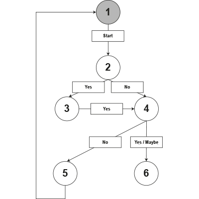
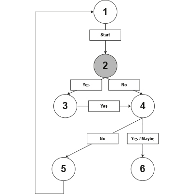
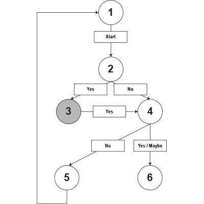
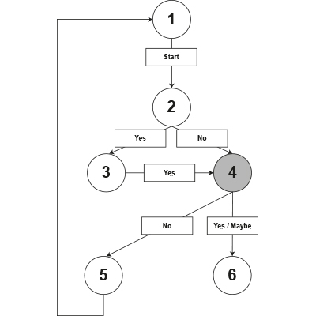
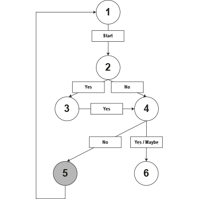
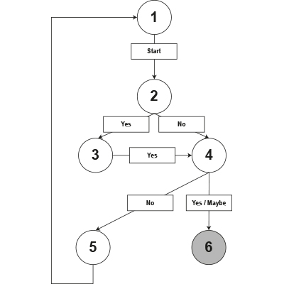

jQuery questionTree.js Plugin Demo
-
Is that plugin is for you?
questionTree.js is a JQuery plugin who realize a series of dynamic questions like a decision tree.

-
Would you ask boolean question ?
This is question true/false or yes/no

-
All right, this plugin is for you !
Would you know more ?

-
Would you ask multichoice question ?

-
That plugin is not absolutely
Do you want to check it again ?

-
All right, this plugin is for you !
What is good with questionTree.js :
- Build with HTML content (better than a JS object, for SEO for exemple)
- Customizable (options)
- Easy to layout (no CSS useless)
